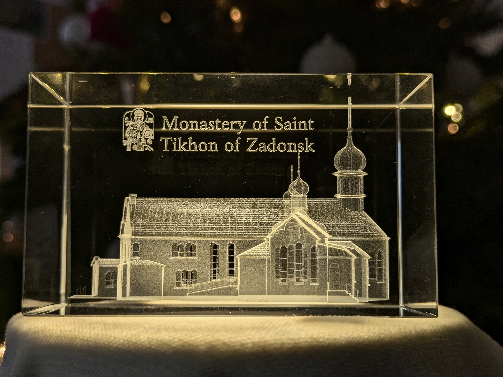
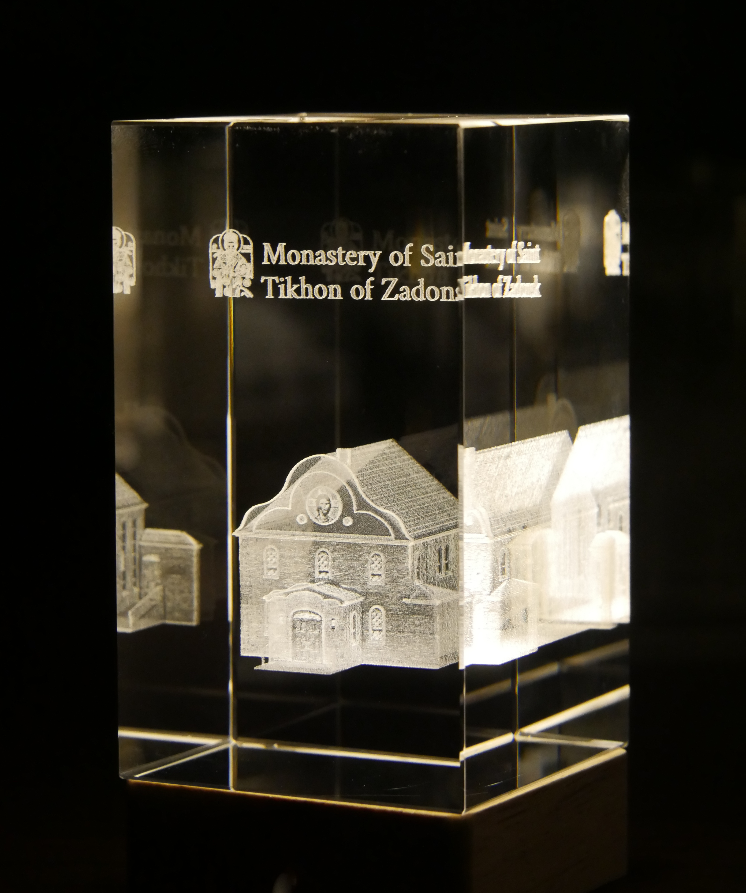

St. Tikhon's Monastery is the oldest operating Orthodox Christian monastery in the United States of America. Eyekonika worked with the abbot through several iterations to model the front of the main monastery church, capturing the iconic building's entrance and front icon.

